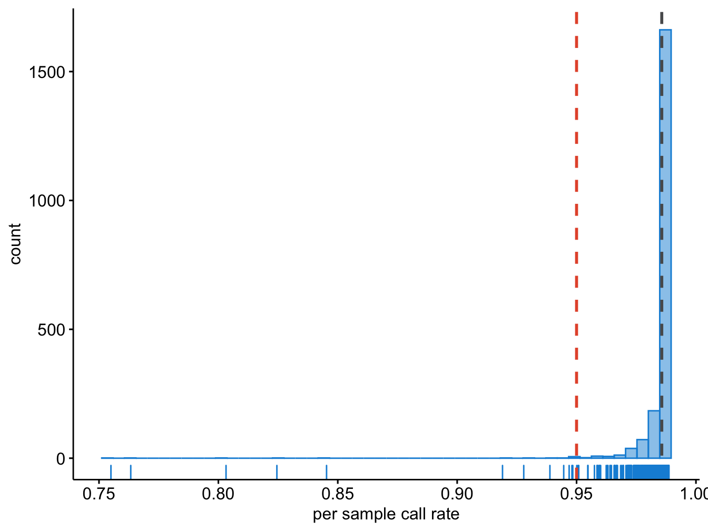
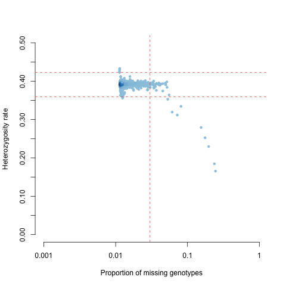
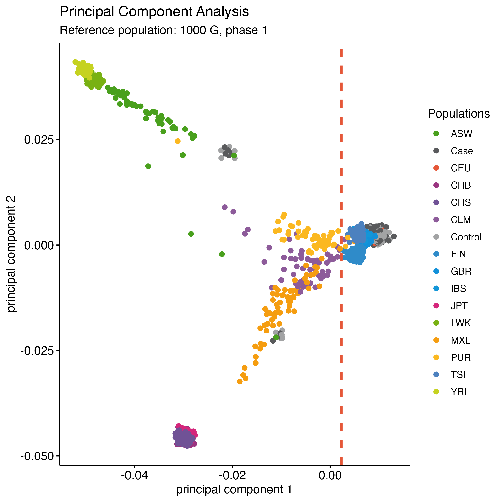

FID |
IID |
PEDSEX |
SNPSEX |
STATUS |
F |
|---|---|---|---|---|---|
772 |
772 |
2 |
0 |
PROBLEM |
0.3084 |
853 |
853 |
2 |
0 |
PROBLEM |
0.3666 |
1,920 |
1,920 |
2 |
0 |
PROBLEM |
0.4066 |
7 Sample QC
Let’s start with the per-sample quality control. The goal here is to identify all the samples that for some reason (mentioned in the previous section) should be excluded.
7.1 Sex
We need to identify of individuals with discordant sex information comparing phenotypic and genotypic data. Let’s calculate the mean homozygosity rate across X-chromosome markers for each individual in the study.
Terminal
plink --bfile dummy_project/rawdata --check-sex --out dummy_project/rawdataThis produces a file with the following columns:
- FID Family ID
- IID Within-family ID
- PEDSEX Sex code in input file
- SNPSEX Imputed sex code (1 = male, 2 = female, 0 = unknown)
- STATUS ‘OK’ if PEDSEX and SNPSEX match and are nonzero, ‘PROBLEM’ otherwise
- F Inbreeding coefficient, considering only X chromosome. Not present with ‘y-only’.
- YCOUNT Number of nonmissing genotype calls on Y chromosome. Requires ‘ycount’/‘y-only’.
We need to get a list of individuals with discordant sex data.
Terminal
cat dummy_project/rawdata.sexcheck | awk '$5 =="STATUS" || $5 =="PROBLEM"' > dummy_project/rawdata.sexprobs.txtLet’s have a look at the results.
Terminal
cat dummy_project/rawdata.sexprobs.txtWhen the homozygosity rate (F) is more than 0.2, but less than 0.8, the genotype data are inconclusive regarding the sex of an individual and these are marked in column SNPSEX with a 0, and the column STATUS “PROBLEM”.
Report the IDs of individuals with discordant sex information (Table 7.1) to those who conducted sex phenotyping. In situations in which discrepancy cannot be resolved, add the family ID (FID) and individual ID (IID) of the samples to a file named fail-sexcheck-qc.txt (one individual per line, tab delimited).
Terminal
grep "PROBLEM" dummy_project/rawdata.sexcheck | awk '{ print $1, $2}' > dummy_project/fail-sexcheck-qc.txt7.2 Sample call rates
Let’s get an overview of the missing data per sample and per SNP.
Terminal
plink --bfile dummy_project/rawdata --missing --out dummy_project/rawdataThis produces two files, rawdata/rawdata.imiss and rawdata/rawdata.lmiss. In the .imiss-file the N_MISS column denotes the number of missing SNPs, and the F_MISS column denotes the proportion of missing SNPs per individual.
The grey dashed line in Figure 7.1 indicates the mean call rate, while the red dashed line indicates the threshold we had determined above.

7.3 Heterozygosity rate
To properly calculate heterozygosity rate and relatedness (identity-by-descent [IBD]) we need to do four things:
- pre-clean the data to get a high-quality set,
- of independent SNPs,
- exclude long-range linkage disequilibrium (LD) blocks that bias with these calculations, and
- exclude A/T and C/G SNPs as these may be ambivalent in interpretation when frequencies between cases and controls are close (MAF ± 0.45),
- remove all non-autosomal SNPs.
You can find an up-to-date list of LD blocks you should exclude in these types of analyses here for the different genome builds. In this case we are using build 37. For the purpose of this book we included a file with these regions in the support-directory.
We will use the following settings:
- remove A/T and C/G SNPs with the flag
--exclude dummy_project/all.atcg.variants.txt, - call rate <1% with the flag
--geno 0.10, - Hardy-Weinberg Equilibrium (HWE) p-value > 1x10-3 with the flag
--hwe 1e-3, - and MAF>10% with the flag
--maf 0.10, - prune the data to only select independent SNPs (with low LD r^2) of one pair each with
r^2 = 0.2with the flags--indep-pairwise 100 10 0.2and--extract rawdata/raw-GWA-data.prune.in, - SNPs in long-range LD regions (for example: MHC chr 6 25.8-36Mb, chr 8 inversion 6-16Mb, chr17 40-45Mb, and a few more) with the flag
--exclude range support/exclude_problematic_range.txt, - remove non-autosomal SNPs with the flag
--autosome.
First, get a list of A/T and C/G SNPs. Remember, the list of markers for this GWAS is noted in the .bim file. We can simply grep all the lines where the two alleles either have an A/T or C/G combination.
Terminal
cat dummy_project/rawdata.bim | \
awk '($5 == "A" && $6 == "T") || ($5 == "T" && $6 == "A") || ($5 == "C" && $6 == "G") || ($5 == "G" && $6 == "C") { print $2 }' \
> dummy_project/all.atcg.variants.txtSecond, clean the data and get a list of independent SNPs.
Terminal
plink --bfile dummy_project/rawdata \
--autosome \
--maf 0.10 --geno 0.10 --hwe 1e-3 \
--indep-pairwise 100 10 0.2 \
--exclude range support/exclude_problematic_range.txt \
--make-bed --out dummy_project/rawdata.clean.tempPlease note, we have create a dataset without taking into account LD structure. Hence, the message ‘Pruned 0 variants from chromosome 1, leaving 19420.’ etc. In a dataset without any LD structure this flag
--indep-pairwise 100 10 0.2doesn’t actually work. However, with real-data you can use it to prune out unwanted SNPs in high LD.
Third, exclude the pruned SNPs. Note, how we include a file to exclude high-LD for the purpose of the practical.
Terminal
plink --bfile dummy_project/rawdata.clean.temp \
--extract rawdata/raw-GWA-data.prune.in \
--make-bed --out dummy_project/rawdata.clean.ultraclean.tempFourth, remove the A/T and C/G SNPs.
Terminal
plink --bfile dummy_project/rawdata.clean.ultraclean.temp \
--exclude dummy_project/all.atcg.variants.txt \
--make-bed --out dummy_project/rawdata.clean.ultracleanPlease note, this dataset doesn’t actually include this type of SNP, hence
rawdata/all.atcg.variants.txtis empty! Again, you can use this command in real-data to exclude A/T and C/G SNPs.
Lastly, remove the temporary files.
Terminal
rm -fv dummy_project/*.temp*Finally, we can calculate the heterozygosity rate.
Terminal
plink --bfile dummy_project/rawdata.clean.ultraclean --het --out dummy_project/rawdata.clean.ultracleanThis creates the file dummy_project/rawdata.clean.ultraclean.het, in which the third column denotes the observed number of homozygous genotypes, O(Hom), and the fifth column denotes the number of nonmissing genotypes, N(NM), per individual. We can now calculate the observed heterozygosity rate per individual using the formula (N(NM) - O(Hom))/N(NM).
Often there is a correlation between heterozygosity rate and missing data. Thus, we should plot the observed heterozygosity rate per individual on the x-axis and the proportion of missing SNP, that is the ‘SNP call rate’, per individuals on the y-axis (Figure 7.2).
Alternatively, with ggplot2. Note that colors is a vector with one colour per sample, so it has to be added to the data and used with scale_color_identity(); passing it as color = colors to ggpubr::ggscatter() does not work.

Examine the plot (Figure 7.2) to decide reasonable thresholds at which to exclude individuals based on elevated missing or extreme heterozygosity. We chose to exclude all individuals with a genotype failure rate >= 0.03 (vertical dashed line) and/or a heterozygosity rate ± 3 s.d. from the mean (horizontal dashed lines). Add the FID and IID of the samples failing this QC to the file named fail-imisshet-qc.txt.
How would you create this file?
If all is right, you’d have something like Table 7.2.
FID |
IID |
|---|---|
28 |
28 |
50 |
50 |
52 |
52 |
53 |
53 |
67 |
67 |
96 |
96 |
205 |
205 |
298 |
298 |
310 |
310 |
351 |
351 |
404 |
404 |
418 |
418 |
423 |
423 |
428 |
428 |
442 |
442 |
444 |
444 |
548 |
548 |
772 |
772 |
835 |
835 |
850 |
850 |
853 |
853 |
910 |
910 |
939 |
939 |
966 |
966 |
968 |
968 |
1,003 |
1,003 |
1,006 |
1,006 |
1,045 |
1,045 |
1,058 |
1,058 |
1,154 |
1,154 |
1,236 |
1,236 |
1,294 |
1,294 |
1,395 |
1,395 |
1,537 |
1,537 |
1,554 |
1,554 |
1,587 |
1,587 |
1,694 |
1,694 |
1,789 |
1,789 |
1,832 |
1,832 |
1,866 |
1,866 |
1,904 |
1,904 |
1,920 |
1,920 |
1,951 |
1,951 |
1,952 |
1,952 |
1,953 |
1,953 |
1,954 |
1,954 |
1,955 |
1,955 |
1,981 |
1,981 |
1,984 |
1,984 |
1,985 |
1,985 |
1,986 |
1,986 |
7.5 Ancestral background
Using a Principal Component Analysis (PCA) we can reduce the dimensions of the data, and project the “ancestral distances”. In other words, the principal component 1 (the first dimension) and principal component 2 (the second dimension) which will capture most of the variation in the data and represent how much each sample is alike the next. And when compared to a reference, you can deduce the ancestral background of each sample in your dataset. Of course this is relative: we will only know that a given sample is very much a like samples from a given population that exists today.
Nowadays we run such PCA against a large and diverse dataset containing many different populations. Old-school GWAS (pre-2009) would compare a dataset against HapMap 3, nowadays we prefer at a minimum the 1000G phase 3 populations. And in those ancient times the preferred software to run a PCA was Eigensoft which is a bit tricky to install (see Appendix A), but nowadays PLINK provides the --pca-flag.
For the purpose of this practical primer we will run PCA using PLINK and its --pca-flag against an earlier version of 1000G, phase 1, which is slightly smaller and just as good to use.
7.5.1 1000G phase 1
We will project our data to the reference, in this example 1000G phase 1 (1000G), which includes individuals from 14 distinct global populations across 4 ‘super’-populations (Europeans [EUR], Africans [AFR], East-Asians [EAS], and Latin Americans [AMR]). In the real-world, using phase 1 may be just fine, but if you think your population evolved through extensive migration it’s probably best to use phase 3 data. In other words, the choice of reference is really depending on the dataset.
First, we will merge our data with 1000G. The alleles at each marker must be aligned to the same DNA strand to allow our data to merge correctly. Because not all SNPs are required for this analysis the A->T and C->G SNPs, which are more difficult to align, can be omitted.
7.5.1.1 Filter the 1000G data
First, we should get a list of relevant variants from our rawdata-dataset: the SNP IDs (column 2 of the .bim file) that start with rs. We don’t need the other variants present in the 1000G dataset, right?
Terminal
awk '$2 ~ /^rs/ { print $2 }' dummy_project/rawdata.bim > dummy_project/all.variants.txtExtract those from the 1000G phase 1 data.
Terminal
plink --bfile ref_1kg_phase1_all/1kg_phase1_all --extract dummy_project/all.variants.txt --make-bed --out ref_1kg_phase1_all/1kg_phase1_raw7.5.1.2 Filter A/T & C/G SNPs
As explained, the A/T and C/G SNPs are problematic, we want to exclude these too. So let’s get a list of A/T and C/G variants from 1000G to exclude - this may take a while.
Terminal
cat ref_1kg_phase1_all/1kg_phase1_raw.bim | \
awk '($5 == "A" && $6 == "T") || ($5 == "T" && $6 == "A") || ($5 == "C" && $6 == "G") || ($5 == "G" && $6 == "C") { print $2 }' \
> ref_1kg_phase1_all/all.1kg.atcg.variants.txt7.5.1.3 Filter variants that map to a different chromosome
Our rawdata and the 1000G phase 1 data were not mapped to the same version of the human reference genome (‘genome build’): rawdata is on hg18 (also known as NCBI build 36), while 1000G phase 1 is on hg19 (GRCh37). Because of that, many SNPs have a slightly different base-pair position in the two datasets, and a few even map to a different chromosome. When merging, PLINK keeps the positions of the first dataset and warns about every difference (Warning: Multiple positions seen for variant ...). For the PCA this is mostly harmless, because it only uses the SNP IDs, but SNPs that map to a different chromosome (Warning: Multiple chromosomes seen for variant ...) cannot be trusted and should go.
Let’s find the SNPs that are on a different chromosome in the two datasets:
Terminal
awk 'NR == FNR { chr[$2] = $1; next } ($2 in chr) && chr[$2] != $1 { print $2 }' \
dummy_project/rawdata.bim ref_1kg_phase1_all/1kg_phase1_raw.bim > ref_1kg_phase1_all/all.1kg.chr-mismatch.variants.txt
wc -l ref_1kg_phase1_all/all.1kg.chr-mismatch.variants.txtand combine them with the A/T and C/G SNPs into one list of variants to exclude:
Terminal
cat ref_1kg_phase1_all/all.1kg.atcg.variants.txt ref_1kg_phase1_all/all.1kg.chr-mismatch.variants.txt | sort -u > ref_1kg_phase1_all/all.1kg.exclude.variants.txt
Note
The proper solution is to first convert (‘lift over’) rawdata to the same genome build as the reference, for example with liftOver. We will add this to a future version of this primer.
Exclude all of these variants in both datasets and at the same time filter to only retain high-quality data and exclude non-autosomal variants.
Terminal
plink --bfile ref_1kg_phase1_all/1kg_phase1_raw --exclude ref_1kg_phase1_all/all.1kg.exclude.variants.txt --make-bed --out ref_1kg_phase1_all/1kg_phase1_raw_no_atcg
plink --bfile dummy_project/rawdata --exclude ref_1kg_phase1_all/all.1kg.exclude.variants.txt --make-bed --out dummy_project/rawdata_1kg_phase1_raw_no_atcgYou may see Warning: ... het. haploid genotypes present. These are heterozygous calls on the X chromosome in males, who have only one X chromosome, and PLINK treats them as missing. You can ignore this warning here, because we will keep only the autosomes (--autosome) when we merge.
7.5.1.4 Merging datasets
Try and merge the data.
Terminal
plink --bfile dummy_project/rawdata_1kg_phase1_raw_no_atcg --bmerge ref_1kg_phase1_all/1kg_phase1_raw_no_atcg --make-bed --out dummy_project/rawdata.1kg_phase1There probably is an error …
Output
Error: 72 variants with 3+ alleles present.
* If you believe this is due to strand inconsistency, try --flip with
dummy_project/rawdata.1kg_phase1-merge.missnp.
(Warning: if the subsequent merge seems to work, strand errors involving SNPs
with A/T or C/G alleles probably remain in your data. If LD between nearby
SNPs is high, --flip-scan should detect them.)
* If you are dealing with genuine multiallelic variants, we recommend exporting
that subset of the data to VCF (via e.g. '--recode vcf'), merging with
another tool/script, and then importing the result; PLINK is not yet suited
to handling them.
See https://www.cog-genomics.org/plink/1.9/data#merge3 for more discussion.So let’s flip some variants.
Terminal
plink --bfile dummy_project/rawdata --exclude ref_1kg_phase1_all/all.1kg.exclude.variants.txt --flip dummy_project/rawdata.1kg_phase1-merge.missnp --make-bed --out dummy_project/rawdata_1kg_phase1_raw_no_atcgLet’s try again and merge the data.
Terminal
plink --bfile dummy_project/rawdata_1kg_phase1_raw_no_atcg --bmerge ref_1kg_phase1_all/1kg_phase1_raw_no_atcg --make-bed --out dummy_project/rawdata.1kg_phase1There still is an error – there are a few multi-allelic variants present which PLINK can’t handle.
Output
Error: 14 variants with 3+ alleles present.
* If you believe this is due to strand inconsistency, try --flip with
dummy_project/rawdata.1kg_phase1-merge.missnp.
(Warning: if the subsequent merge seems to work, strand errors involving SNPs
with A/T or C/G alleles probably remain in your data. If LD between nearby
SNPs is high, --flip-scan should detect them.)
* If you are dealing with genuine multiallelic variants, we recommend exporting
that subset of the data to VCF (via e.g. '--recode vcf'), merging with
another tool/script, and then importing the result; PLINK is not yet suited
to handling them.
See https://www.cog-genomics.org/plink/1.9/data#merge3 for more discussion.Let’s just remove these multi-allelic variants.
Terminal
plink --bfile dummy_project/rawdata_1kg_phase1_raw_no_atcg --exclude dummy_project/rawdata.1kg_phase1-merge.missnp --make-bed --out dummy_project/rawdata_1kg_phase1_raw_no_atcg_biAfter removing those pesky multi-allelic variants, we should be able to merge the data. We should take of the following:
- extract the pruned SNP-set (remember?),
--extract rawdata/raw-GWA-data.prune.i, - exclude non-autosomal variants,
--autosome, - and only keeping high-quality data,
--maf 0.10 --geno 0.10 --hwe 1e-3,
Terminal
plink --bfile dummy_project/rawdata_1kg_phase1_raw_no_atcg_bi \
--bmerge ref_1kg_phase1_all/1kg_phase1_raw_no_atcg \
--autosome \
--maf 0.10 --geno 0.10 --hwe 1e-3 \
--extract rawdata/raw-GWA-data.prune.in \
--make-bed --out dummy_project/rawdata.1kg_phase1.cleanBefore we continue it’s best to clean up a bit of the mess.
Terminal
rm -fv dummy_project/rawdata_1kg_phase1_raw_no_atcg_bi* ref_1kg_phase1_all/1kg_phase1_raw_no_atcg* dummy_project/rawdata.1kg_phase1.pruned* dummy_project/rawdata_1kg_phase1_raw_no_atcg* dummy_project/rawdata.1kg_phase1-merge* dummy_project/rawdata.1kg_phase1.bed dummy_project/rawdata.1kg_phase1.bim dummy_project/rawdata.1kg_phase1.fam dummy_project/rawdata.1kg_phase1.hh dummy_project/rawdata.1kg_phase1.log ref_1kg_phase1_all/1kg_phase1_raw.*Now we have prepared our dataset with only high-quality SNPs that have few missing data, that are high-frequent, exclude problematic genomic ranges, and merged to the 1000G phase 1 reference dataset. Your output should look something like this:
Output
PLINK v1.90b7.2 64-bit (11 Dec 2023) www.cog-genomics.org/plink/1.9/
(C) 2005-2023 Shaun Purcell, Christopher Chang GNU General Public License v3
Logging to dummy_project/rawdata.1kg_phase1.clean.log.
Options in effect:
--autosome
--bfile dummy_project/rawdata_1kg_phase1_raw_no_atcg_bi
--bmerge ref_1kg_phase1_all/1kg_phase1_raw_no_atcg
--extract rawdata/raw-GWA-data.prune.in
--geno 0.10
--hwe 1e-3
--maf 0.10
--make-bed
--out dummy_project/rawdata.1kg_phase1.clean
16384 MB RAM detected; reserving 8192 MB for main workspace.
2000 people loaded from dummy_project/rawdata_1kg_phase1_raw_no_atcg_bi.fam.
1092 people to be merged from ref_1kg_phase1_all/1kg_phase1_raw_no_atcg.fam.
Of these, 1092 are new, while 0 are present in the base dataset.
Warning: Multiple positions seen for variant 'rs3934834'.
Warning: Multiple positions seen for variant 'rs3737728'.
Warning: Multiple positions seen for variant 'rs6687776'.
Warning: Multiple chromosomes seen for variant 'rs1050301'.
Warning: Multiple chromosomes seen for variant 'rs4850'.
317476 markers loaded from dummy_project/rawdata_1kg_phase1_raw_no_atcg_bi.bim.
312239 markers to be merged from ref_1kg_phase1_all/1kg_phase1_raw_no_atcg.bim.
Of these, 14 are new, while 312225 are present in the base dataset.
312190 more multiple-position warnings: see log file.
Performing single-pass merge (3092 people, 308317 variants).
Merged fileset written to dummy_project/rawdata.1kg_phase1.clean-merge.bed +
dummy_project/rawdata.1kg_phase1.clean-merge.bim +
dummy_project/rawdata.1kg_phase1.clean-merge.fam .
308317 variants loaded from .bim file.
3092 people (1522 males, 1570 females) loaded from .fam.
3092 phenotype values loaded from .fam.
--extract: 49856 variants remaining.
Using 1 thread (no multithreaded calculations invoked).
Before main variant filters, 3078 founders and 14 nonfounders present.
Calculating allele frequencies... done.
Total genotyping rate is 0.994867.
299 variants removed due to missing genotype data (--geno).
--hwe: 13825 variants removed due to Hardy-Weinberg exact test.
2617 variants removed due to minor allele threshold(s)
(--maf/--max-maf/--mac/--max-mac).
33115 variants and 3092 people pass filters and QC.
Phenotype data is quantitative.
--make-bed to dummy_project/rawdata.1kg_phase1.clean.bed +
dummy_project/rawdata.1kg_phase1.clean.bim +
dummy_project/rawdata.1kg_phase1.clean.fam ... done.So in total there are 3,092 individuals, 1,522 males and 1,570 females, and 3,078 founders and 14 non-founders. The total genotyping rate is 99.5% and 33,115 variants are present.
7.5.2 Principal component analysis
Great, we’ve prepared our dummy project data and merged this with 1000G phase 1. Let’s execute the PCA using --pca in PLINK.
Terminal
plink --bfile dummy_project/rawdata.1kg_phase1.clean --pca --out dummy_project/rawdata.1kg_phase1.clean7.5.3 Plotting the PCA results
If all is peachy, you just succesfully ran PCA against 1000G phase 1. Using --pca we have calculated principal components (PCs), 20 in total by default, and we can now start plotting them. Let’s create a scatter diagram of the first two principal components, including all individuals in the file rawdata.1kg_phase1.clean.eigenvec (the first and second principal components are columns 3 and 4, respectively). We need to collect some per-sample information to color the points according to sample origin.
First we collect the results from the --pca, the dummy data phenotype information, and the reference population information.
The sign of a principal component is arbitrary: depending on the software version, your plot may be mirrored horizontally and/or vertically compared to Figure 7.3. To make the threshold below work on every system, we orient the PCs so that the European reference samples (CEU) have positive scores.
Derive PC1 and PC2 thresholds so that only individuals who match the given ancestral population are included. For populations of European descent, this will be either the CEU or TSI 1000G individuals (Figure 7.3). Here, we chose to exclude all individuals with a first principal component score less than 0.0023.
Write the FID and IID of these individuals to a file called fail-ancestry-QC.txt.
Terminal
cat dummy_project/rawdata.1kg_phase1.clean.eigenvec | \
awk '$3 < 0.0023' | awk '{ print $1, $2 }' > dummy_project/fail-ancestry-QC.txtChoosing which thresholds to apply (and thus which individuals to remove) is not a straightforward process. The key is to remove those individuals with greatly divergent ancestry, as these samples introduce the most bias to the study. Identification of more fine-scale ancestry can be conducted by using less divergent reference samples (e.g., within Europe, stratification could be identified using the CEU, TSI (Italian), GBR (British), FIN (Finnish) and IBS (Iberian) samples from the 1,000 Genomes Project (http://www.1000genomes.org/)). Robust identification of fine-scale population structure often requires the construction of many (2–10) principal components.

7.6 Removing samples
Finally! We have a list of samples of poor quality or divergent ancestry, and duplicated or related samples. We should remove these. Let’s collect all IDs from our fail-*-files into a single file.
Terminal
cat dummy_project/fail-* | sort -k1 | uniq > dummy_project/fail-qc-inds.txtThis new file should now contain a list of unique individuals failing the previous QC steps which we want to remove.
Terminal
plink --bfile dummy_project/rawdata --remove dummy_project/fail-qc-inds.txt --make-bed --out dummy_project/clean_inds_dataQuestion: How many variants and samples are left? How many cases and how many controls did you loose?
7.7 The next step
Now that you filtered samples, we should turn our attention to step 2 of the QC for GWAS: identify SNPs of poor quality in Chapter 8.